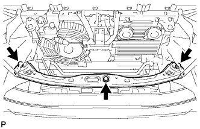
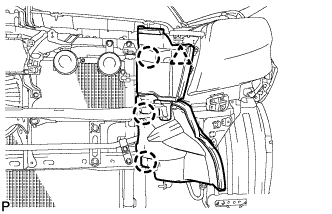
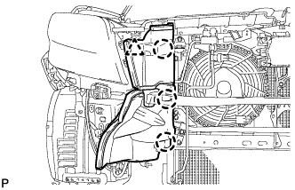
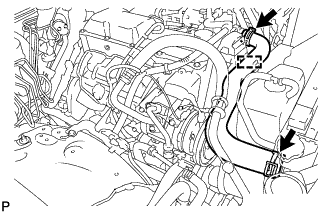
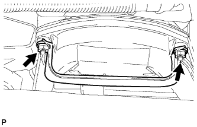
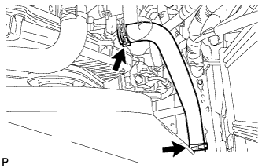
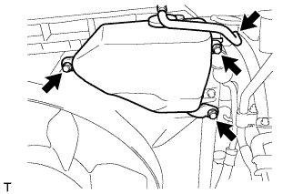
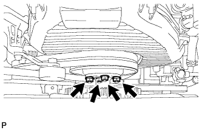
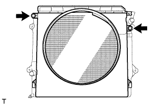
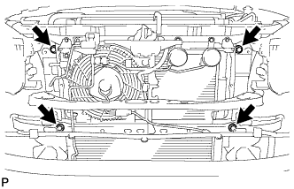

РАДИАТОР > СНЯТИЕ |
| 1. REMOVE UPPER RADIATOR SUPPORT SEAL |
Освободите 13 фиксаторов и снимите верхнее уплотнение кронштейна радиатора.
| 2. REMOVE FRONT BUMPER COVER LOWER |
Remove the clip, 5 bolts and front bumper cover lower.
| 3. REMOVE NO. 1 ENGINE UNDER COVER SUB-ASSEMBLY |
Remove the 4 bolts.
 |
Unhook the engine under cover from the vehicle body as shown in the illustration.
| 4. DRAIN ENGINE COOLANT |
Ослабьте пробку сливного крана радиатора.

| *1 | Пробка радиатора | *2 | Бачок радиатора |
| *3 | Пробка сливного крана радиатора | *4 | Пробка сливного крана блока цилиндров |
Слейте охлаждающую жидкость, сняв крышку радиатора.
Ослабьте пробку сливного крана блока цилиндров.
Ослабьте пробку сливного крана блока цилиндров и слейте охлаждающую жидкость из двигателя.
| 5. REMOVE FRONT BUMPER COVER |
Remove the front bumper cover (See page Нажмите здесь).
| 6. REMOVE UPPER FRONT BUMPER RETAINER |
|  |
Remove the 3 bolts and retainer.
| 7. REMOVE RADIATOR SIDE DEFLECTOR LH |
|  |
Using a clip remover, detach the 3 claws and remove the clip. Then move the side deflector so that the radiator can be removed in the step below.
| 8. REMOVE RADIATOR SIDE DEFLECTOR RH |
|  |
Using a clip remover, detach the 3 claws and remove the clip. Then move the side deflector so that the radiator can be removed in the step below.
| 9. REMOVE NO. 1 RADIATOR HOSE |
|  |
Detach the clamp and remove the No. 1 radiator hose.
|  |
Remove the 2 nuts and hose clamp.
| 10. DISCONNECT NO. 2 RADIATOR HOSE |
|  |
| 11. REMOVE RADIATOR RESERVOIR |
|  |
Disconnect the reservoir hose from the upper side of the radiator tank.
Remove the 3 bolts and radiator reservoir.
| 12. REMOVE FAN SHROUD |
|  |
Loosen the 4 nuts holding the fluid coupling fan.
Remove the vane pump V belt and the fan and generator V belt (See page Нажмите здесь).
|  |
Remove the 2 bolts holding the fan shroud.
Remove the 4 nuts of the fluid coupling fan, and then remove the shroud together with the coupling fan.
Remove the fan pulley from the water pump.
| 13. REMOVE RADIATOR ASSEMBLY |
|  |
Remove the 4 bolts and radiator.
| 14. REMOVE NO. 1 RADIATOR SUPPORT |
Remove the 2 radiator supports and 2 No. 1 radiator support bushes.
| 15. REMOVE NO. 2 RADIATOR SUPPORT |
Remove the 2 radiator supports and 2 No. 1 radiator support bushes.
| 16. REMOVE NO. 2 RADIATOR SUPPORT SEAL |
Remove the No. 2 radiator support seal from the radiator.
| 17. REMOVE NO. 1 RADIATOR SUPPORT SEAL |
Remove the No. 1 radiator support seal from the radiator.